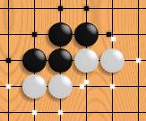
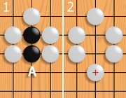
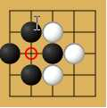

PlayGo¶
Where to get PlayGo¶
PlayGo activity is available for download from the Sugar Activity Library: PlayGo
The source code is available on GitHub.
The Ancient Game of Go (derived from WikiPedia)¶
The olpc PlayGo activity implements Go a strategic board game for two players. Go originated in ancient China, centuries before its earliest known references in 5th century BC writing. It is mostly popular in East Asia but has nowadays gained some popularity in the rest of the world as well. Go is noted for being rich in strategic complexity despite its simple rules.
Go is played by two players alternately placing black and white stones on the vacant intersections of a line grid. The standard size of this grid is 19 × 19, although the rules of Go can be freely applied to any size: 13 × 13 and 9 × 9 are also popular choices for simpler and more tactic-oriented games as well as a way to introduce Go to new players. The objective of the game is to control a larger part of the board than the opponent. To achieve this, players strive to place their stones in such a way that they cannot be captured, while mapping out territories that cannot be invaded by the opponent without being captured. A stone or a group of stones is captured and removed if it has no empty adjacent intersections, the result of being completely surrounded by stones of the opposing color. Generally, placing stones close together helps them avoid capture, whereas placing them far apart allows a player to surround more territory. Part of the strategic difficulty of the game stems from finding a balance between these two conflicting interests. The game ends, and the score is counted when both players consecutively pass on a turn, indicating that neither side can increase its territory or reduce its opponent’s.
Basic rules from WikiPedia¶

One black chain and two white chains, their liberties shown with dots. Note that liberties are shared among all stones of a chain.¶
Two players, Black and White, take turns placing a stone (game piece) of their own color on a vacant point (intersection) of the grid on a Go board. Black moves first. Normally, the grid measures 19×19 lines, though the rules can be freely applied to all grid sizes. Grid sizes 9×9 and 13×13 are often used to teach beginners and still offer a challenging game to experienced players. Once played, a stone may not be moved to a different point. [1] [2]
Orthogonally adjacent stones of the same color form a chain (also called a group) that shares its liberties (see below) in common, cannot subsequently be subdivided, and in effect becomes a single larger ston. Only stones connected to one another by the lines on the board create a chain; stones that are diagonally adjacent are not connected. Chains may be expanded by playing additional stones on adjacent intersections or connected together by playing a stone on an intersection that is adjacent to two or more chains of the same color.

If white plays at A, the black chain loses its last liberty. It is captured and removed from the board.¶
A vacant point adjacent to a stone is called a liberty for that stone. [3]. Chains of stones share their liberties. A chain of stones must have at least one liberty to remain on the board. When a chain is surrounded by opposing stones so that it has no liberties, it is captured and removed from the board.
Generally, it is not allowed to play a stone in such a way that one of your own chains is left without liberties. Such a move is dubbed suicide. An exception to this rule occurs if doing so captures one or more of the opponent’s stones. In this case, the opponent’s stones are captured first, leaving the newly played stone at least one liberty.

An example of a situation in which the ko rule applies.¶
Players are not allowed to make a move that returns the game to the position before the opponent’s last previous move. This rule, called the ko rule, prevents unending repetition. See the example to the right: Black has just played the stone marked 1, capturing a white stone at the intersection marked with a circle. If White were now allowed to play on the marked intersection, that move would capture the black stone marked 1 and recreate the situation before Black made the move marked 1. Allowing this would result in an unending cycle of captures by both players. The ko rule therefore prohibits White from playing at the marked intersection. Instead White must play elsewhere; Black can then end the ko by filling at the marked intersection, creating a five-stone Black chain. If White wants to continue the ko, she will try to find a play that Black must answer; if Black answers, then White can retake the ko. A repetition of such exchanges is called a ko fight.
Instead of placing a stone, a player may pass, indicating that he sees no way to increase his territory or reduce his opponent’s territory. When both players pass consecutively, the game ends and is then scored.
Scoring Rules¶
There are two basic ways to count the score at the end of the game. The oldest of these is called territory scoring and is used in Japan, Korea and most Western nations. The other scoring rules —invented in 15th-century China — are called area scoring and are used in China and some other countries. The US uses a scoring system that is a hybrid of these two systems.
With territory scoring, a player’s score is the number of empty points enclosed by his stones, plus the number of prisoners he has. Prisoners are opposing stones which he has captured during the game or those that are still on the board but cannot avoid capture.
With area scoring, a player’s score is the number of stones he has on the board, plus the number of empty intersections he has surrounded. Prisoners do not count toward the score under these rules.
Given the fact that the number of stones a player has on the board is directly related to the number of prisoners his opponent has taken, the resulting score under both rules is often identical and is rarely more than one point different. Under US rules, players hand over a prisoner when they pass, called a pass stone. Combined with the requirement that White makes the last pass, this system guarantees that the net score under territory scoring will be the same as that under area scoring.
Each of these scoring methods has advantages and disadvantages. There have been some efforts to agree on a standardized set of international rules.
Optional rules¶
Optional Go rules may set the following:
compensation points, almost always for the second player; Tournaments commonly use a compensation in the range of 5-8 points, generally including a half-point to prevent draws.
compensation stones placed on the board before alternate play, allowing players of different strengths to play competitively
superko: Although the basic ko rule described above covers over 95% of all cycles occurring in games, there are some complex situations —triple ko, eternal life, etc.— that are not covered by it but would allow the game to cycle indefinitely. To prevent this, the ko rule is sometimes extended to disallow any previous position. This is called superko.
Where to report problems¶
Please report bugs and make feature requests at playgo-activity/issues.
External Links¶
Gobase Including multilingual Internet Go Dictionary, game database, tutorials, and other material and links
No Name Go Server Go server software under GPL.
The KGS Go Server A good place for kids to play.